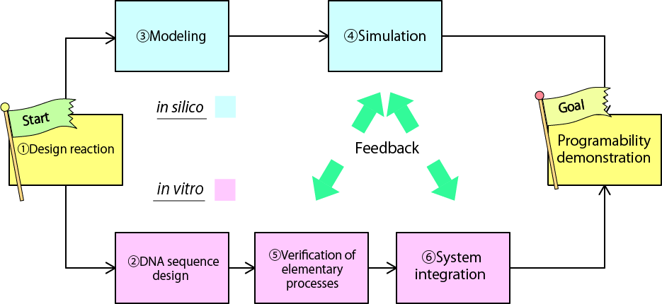
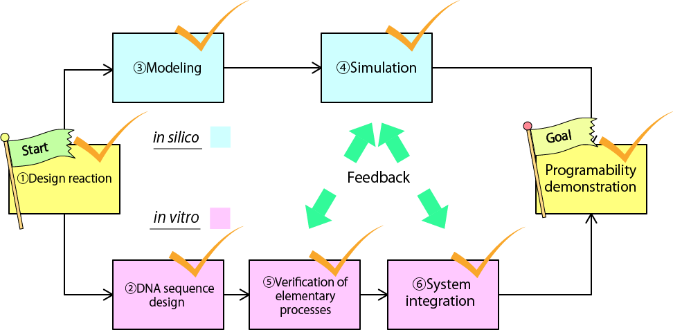

Our Project
Background and Motivation
Developing molecular devices and systems is one of the goals of nanoengineering.
One approach to the goal is using DNA, whose reactions can be programmed based on the Watson-Crick complementary base pairing. By using DNA, a variety of nano devices has been developed so far[1~6]. Orchestrating different nano devices in a consistent manner is a challenging topic. In macroscale, this kind of problem ubiquitously is found in factoring automation. Here we focus attention on "sequence control", which is a technique in control engineering. Sequence Control gives us a powerful method to synchronize the workflow of devices and mechines. It controls them by giving commands to them in order. Applying this method in nanoscale opens a way to control molecular devices in a sequential manner.
Project Idea
To realize this concept, we have designed a device which generates single stranded DNAs in desired order.
In this project, we took two different approaches to realize the device. First approach is to achieve the function by a combination of DNA and enzymes (Enzymatic device). The other approach is using only DNA (Enzyme-free device). Depending on specific purpose, one can choose one of the devices.
In principle, both of them are universal. Namely, There are no limitation in number and permutation of the output.
We analyze the behaviors of our devices both in vitro and in silico to demonstrate the features of our devices.
Project Goal

Our project goals is to realize the devices both in vitro and in silico. We divided our goal into 7 sub-goals.
1, To design a reaction network of molecular device that works autonomously and programmably.
2, To design DNA sequence for the device
3, To formalize a chemical reaction model for simulation study
4, To predict the behavior of our model by simulation
5, To verify elementary processes in our devices
6, To integrate all the processes into one and demonstrate its functionality
Achievement

Actually, we have achieved all the sub-goals so far. Our devices behave almost perfectly as designed both in vitro and in silico. We can program the number and permutation of outputs. In adittion, the time interval of output release is also programmable by changing concentration of chemical species.
Future
Our devices enable us to control variety of nanoscale devices in a sequential manner.
For example, we can control motion of molecular walker[3][4] giving them motion instructions by using our device.
Another application of our device is autonomous reconfigulation of DNA nano structures
In macroscale, self-reconfigurable structures which are capable of transforming into arbitrary shape have been developed[7]. Our device can realize it in nanoscale. By coding instructions to assemble DNA structures on Input tape, rearrangement of nano-modules takes place automatically. Groups of DNA modules get the information, change their connection one by one, and reconfigure its shape into target shape.
A nanoscale sequence control will opens a novel way of functionalizing molecular devices and nano-systems.
Reference
[1]K.Montagne, R.Plasson, Y.sakai, T Fujii, Y. Rondelez, Mol.Sys.Biol.7 (2011) 1-7
[2]A. Padirac, T. Fujii, Y.Rondelez, Proc.Natl.Acid.Sci.U.S.A. 109 (47) (2012) E3212-E3220
[3]S.M. Douglas, I. Bachelt, G.M. Church, Science 335 (6070) (2012) 831-834>
[4]K. Lund, A.J. Hopfield, N. Michelotti, A. Johnson-Buck, J. Nangreave, S. Taylor, R. Pei, M.N. Stojanovic, N.G. Walter, E. Winfree, H. Yan, Nature 465 (7295) (2010) 206-210
[5]L. Qian, E, Winfree, Science 332 (6034) (2011) 1196-1201
[6]H.Gu, J. Chao, S. Xiao, N.C.Seeman, Nature 465 (2010) 202-205
[7]S.Murata, H.Kurokawa, E.Yoshida, K.Tomita, S Kokaji, Robotics and Automation vol.1 (1998) 432-439